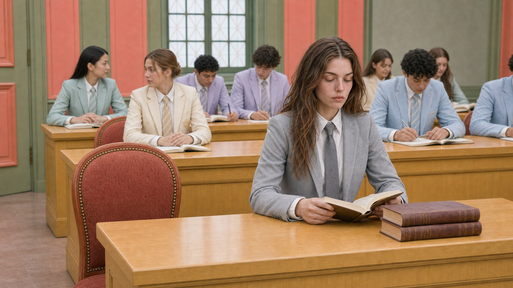
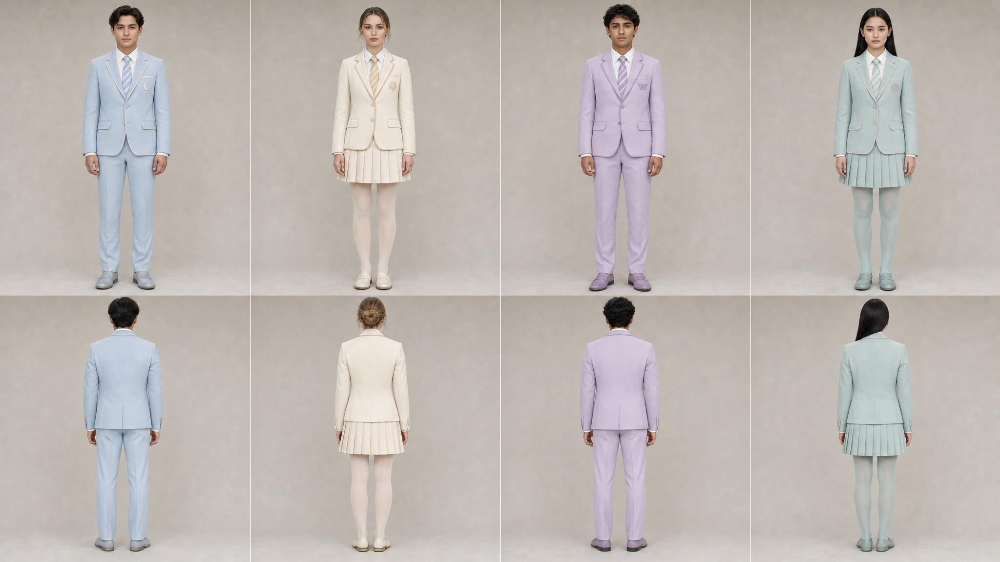

S08-END · Land on Linney
Camera & blockingPart of shot 08, not an extra cut. Start on Vivienne →

Exact input references





Full still prompt · OpenAI Images API
Create a single new photographic 16:9 still: the END FRAME of a camera pan right from Vivienne at the left front classroom desk to Linney at the right front desk. One image only, no panels or text. INPUT ROLES: 1 original empty classroom plate is the authority for architecture, honey-yellow desks, sage trim, salmon wall panels, soft daylight and smooth clean photographic surface finish. 2 original Linney sheet controls her exact adult freckled face, blue eyes, tousled brown hair and plain light-grey blazer, white shirt and grey tie, no crest. 3 original pastel house-uniform sheet controls background costumes. 4 S08 Vivienne put-down still is camera/framing/light reference ONLY: match its seated eye-level camera height, medium framing, focal-length impression, exposure and depth of field. Do not edit or copy its skin texture. 5 the established first classroom wide is spatial reference ONLY for the two separate desks, central aisle and right-side seating. Reconstruct a fresh clean image from originals, not a filtered revision of a generated frame. CAMERA: the camera remains on its tripod in front of the central aisle and rotates horizontally right from the S08 start framing. Same camera height, same lens, no dolly, no zoom, no tilt. Land on Linney in a matching medium shot, seated at the OUTER RIGHT position of the RIGHT front desk. Frame her at center-right with her adjacent empty coral chair on SCREEN LEFT. Show her from head to waist/hands and the desktop, similar subject scale to Vivienne in S08. Perspective should look slightly diagonally toward the right desk from the central aisle, not a perfectly relocated frontal portrait. Do not mirror the room. The right window and pastel-clad classmates belong behind her; the central rear doorway can only be at the far LEFT edge or offscreen LEFT, never behind her head or screen right. No Vivienne or Cassius in this endpoint. Cassius has not sat down yet, so the chair next to Linney is EMPTY. Background classmates remain seated and softly resolved, not erased. ACTING: Linney keeps her eyes lowered to her open book; a small tension in her mouth shows she has heard the insult. Quiet hurt held in, no tears, no smile, no look into camera. Both hands rest naturally near the open book. Two worn plum-brown books with gold spine bands on the honey-yellow desktop. Natural anatomy. No duplicated leads, no additional foreground arms, no joined front desks. FINISH: smooth clean photographic image with soft daylight and pastel architectural color. Fine natural hair and skin, no coarse noise, grain, stippling, gritty grading or oversharpening. No text, labels, arrows, subtitles, watermarks or contact sheet. This is the held landing frame after the pan, not a motion-blurred transition.